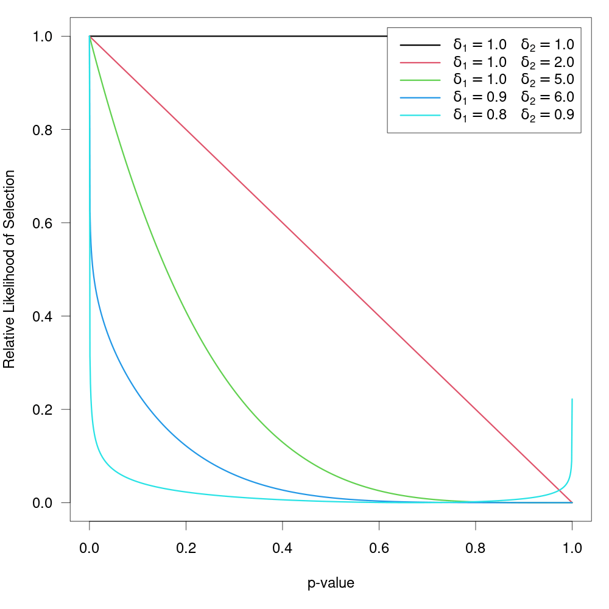
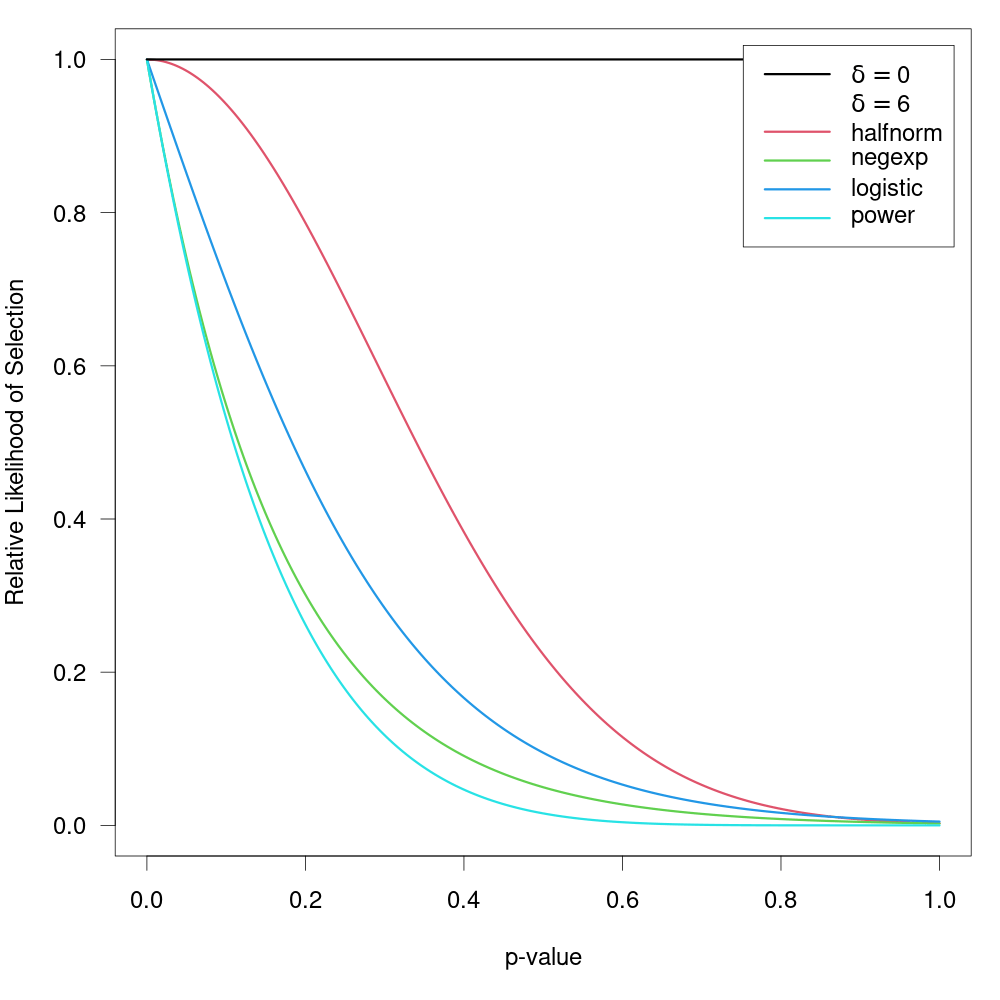
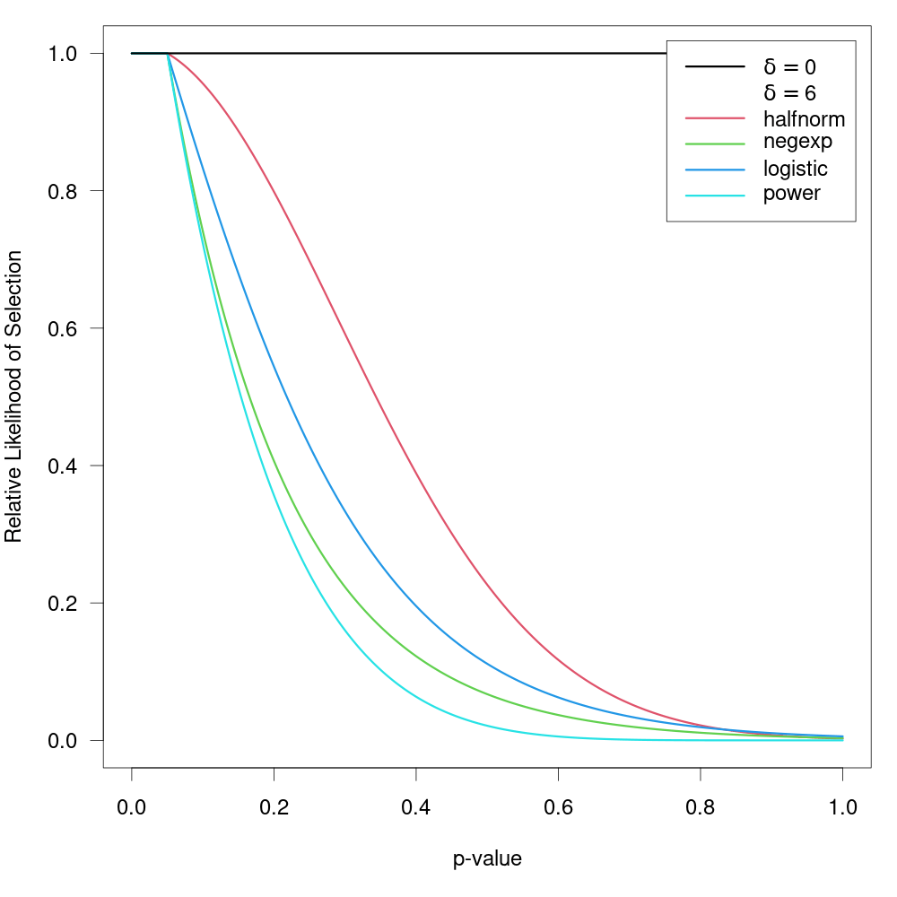
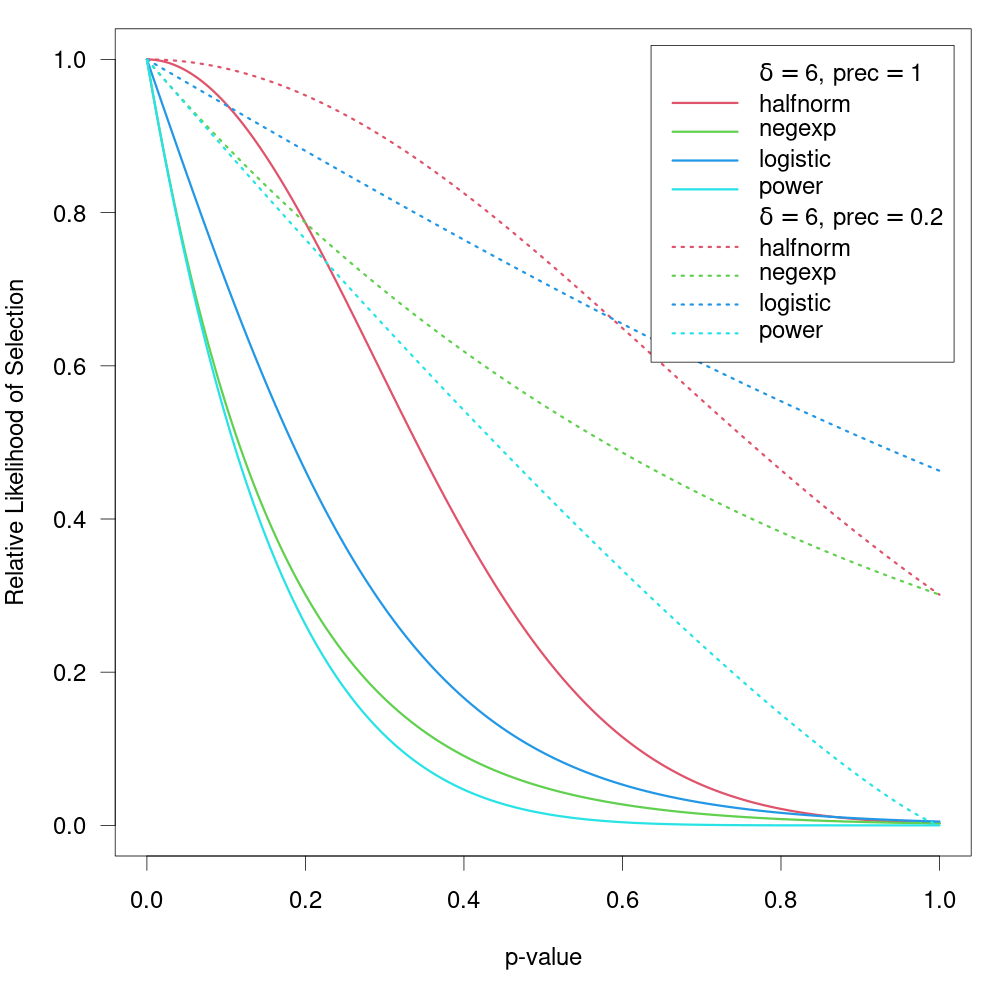
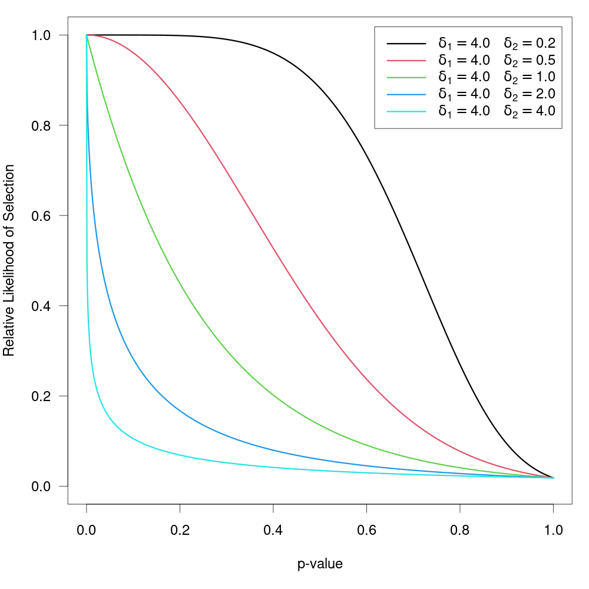
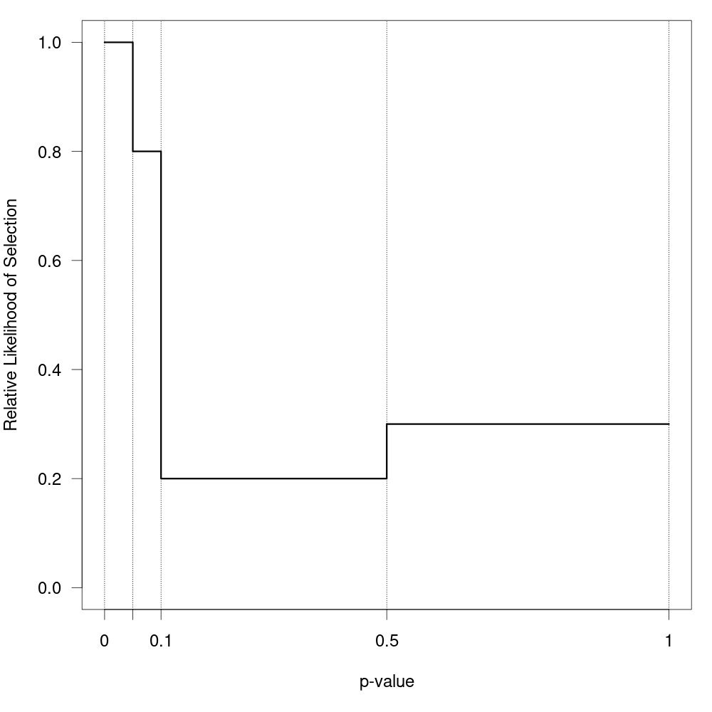
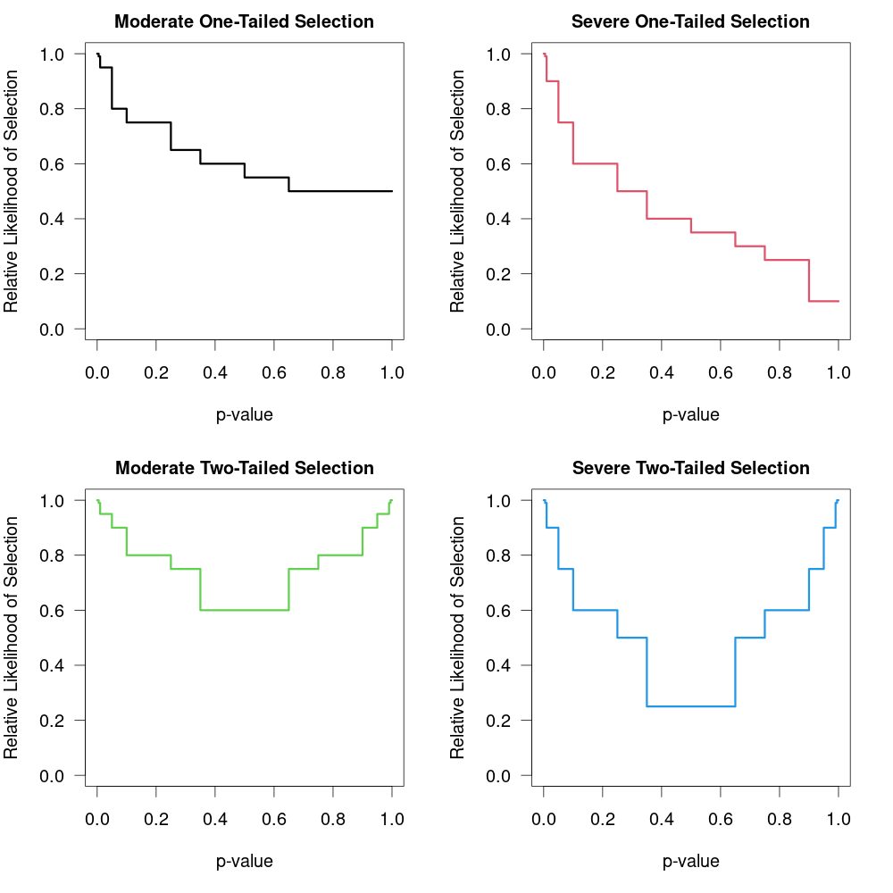

| selmodel {metafor} | R Documentation |
Function to fit selection models.
selmodel(x, ...)
## S3 method for class 'rma.uni'
selmodel(x, type, alternative="greater", prec,
delta, steps, verbose=FALSE, digits, control, ...)
x |
an object of class |
type |
character string to specify the type of selection model. Possible options are |
alternative |
character string to specify the sidedness of the hypothesis when testing the observed outcomes. Possible options are |
prec |
optional character string to specify the measure of precision (only relevant for selection models that can incorporate this into the selection function). Possible options are |
delta |
optional numeric vector (of the same length as the number of selection model parameters) to fix the corresponding \(\delta\) value(s). A specific \(\delta\) value can be fixed by setting the corresponding element of this argument to the desired value. A specific \(\delta\) value will be estimated if the corresponding element is set equal to |
steps |
numeric vector of one or more values between 0 and 1 that can or must be specified for certain selection functions. See ‘Details’. |
verbose |
logical to specify whether output should be generated on the progress of the model fitting (the default is |
digits |
optional integer to specify the number of decimal places to which the printed results should be rounded. If unspecified, the default is to take the value from the object. |
control |
optional list of control values for the estimation algorithm. If unspecified, default values are defined inside the function. See ‘Note’. |
... |
other arguments. |
Selection models are a general class of models that attempt to model the process by which the studies included in a meta-analysis may have been influenced by some form of publication bias. If a particular selection model is an adequate approximation for the underlying selection process, then the model provides estimates of the parameters of interest (e.g., the average true outcome and the amount of heterogeneity in the true outcomes) that are ‘corrected’ for this selection process (i.e., they are estimates of the parameters in the population of studies before any selection has taken place). The present function fits a variety of such selection models. To do so, one should pass an object fitted with the rma.uni function to the first argument. The model that will then be fitted is of the same form as the original model combined with the specific selection model chosen (see below for possible options). For example, if the original model was a random-effects model, then a random-effects selection model will be fitted. Similarly, if the original model included moderators, then they will also be included in the selection model. Model fitting is done via maximum likelihood (ML) estimation over the fixed- and random-effects parameters (e.g., \(\mu\) and \(\tau^2\) in a random-effects model) and the selection model parameters.
Argument type determines the specific type of selection model that should be fitted. All selection models that can be fitted are based on the idea that selection may haven taken place based on the p-values of the studies. In particular, let \(y_i\) and \(v_i\) denote the observed outcome and the corresponding sampling variance of the \(i\textrm{th}\) study. Then \(z_i = y_i / \sqrt{v_i}\) is the (Wald-type) test statistic for testing the null hypothesis \(\mbox{H}_0{:}\; \theta_i = 0\) and \(p_i = 1 - \Phi(z_i)\) (if alternative="greater"), \(p_i = \Phi(z_i)\) (if alternative="less"), or \(p_i = 2(1 - \Phi(|z_i|))\) (if alternative="two.sided") the corresponding (one- or two-sided) p-value, where \(\Phi()\) denotes the cumulative distribution function of a standard normal distribution. Finally, let \(w(p_i)\) denote some function that specifies the relative likelihood of selection given the p-value of a study.
If \(w(p_i) > w(p_{i'})\) when \(p_i < p_{i'}\) (i.e., \(w(p_i)\) is larger for smaller p-values), then alternative="greater" implies selection in favor of increasingly significant positive outcomes, alternative="less" implies selection in favor of increasingly significant negative outcomes, and alternative="two.sided" implies selection in favor of increasingly significant outcomes regardless of their direction.
When type="beta", the function can be used to fit the ‘beta selection model’ by Citkowicz and Vevea (2017). For this model, the selection function is given by \[w(p_i) = p_i^{\delta_1 - 1} \times (1 - p_i)^{\delta_2 - 1}\] where \(\delta_1 > 0\) and \(\delta_2 > 0\). The null hypothesis \(\mbox{H}_0{:}\; \delta_1 = \delta_2 = 1\) represents the case where there is no selection (at least not depending on the p-values). The figure below illustrates with some examples how the relative likelihood of selection can depend on the p-value for various combinations of \(\delta_1\) and \(\delta_2\). Note that the model allows for a non-monotonic selection function.

Preston et al. (2004) suggested the first three of the following selection functions:
| name | type | selection function | ||
| half-normal | "halfnorm" | \(w(p_i) = \exp(-\delta \times p_i^2)\) | ||
| negative-exponential | "negexp" | \(w(p_i) = \exp(-\delta \times p_i)\) | ||
| logistic | "logistic" | \(w(p_i) = 2 \times \exp(-\delta \times p_i) / (1 + \exp(-\delta \times p_i))\) | ||
| power | "power" | \(w(p_i) = (1-p_i)^\delta\) |
The power selection model is added here as it has similar properties as the models suggested by Preston et al. (2004). For all models, assume \(\delta \ge 0\), so that all functions imply a monotonically decreasing relationship between the p-value and the selection probability. For all functions, \(\mbox{H}_0{:}\; \delta = 0\) implies no selection. The figure below shows the relative likelihood of selection as a function of the p-value for \(\delta = 0\) and for the various selection functions when \(\delta = 6\).

Here, these functions are extended to allow for the possibility that \(w(p_i) = 1\) for p-values below a certain significance threshold denoted by \(\alpha\) (e.g., to model the case that the relative likelihood of selection is equally high for all significant studies but decreases monotonically for p-values above the significance threshold). To fit such a selection model, one should specify the \(\alpha\) value (with \(0 < \alpha < 1\)) via the steps argument. There must be at least one observed p-value below and above the chosen threshold to fit these models. The figure below shows some examples of the relative likelihood of selection when steps=.05.

Preston et al. (2004) also suggested selection functions where the relatively likelihood of selection not only depends on the p-value, but also the precision (e.g., standard error) of the estimate (if two studies have similar p-values, it may be plausible to assume that the larger / more precise study has a higher probability of selection). These selection functions plus the corresponding power functions are given by:
| name | type | selection function | ||
| half-normal | "halfnorm" | \(w(p_i) = \exp(-\delta \times \mathrm{prec}_i \times p_i^2)\) | ||
| negative-exponential | "negexp" | \(w(p_i) = \exp(-\delta \times \mathrm{prec}_i \times p_i)\) | ||
| logistic | "logistic" | \(w(p_i) = 2 \times \exp(-\delta \times \mathrm{prec}_i \times p_i) / (1 + \exp(-\delta \times \mathrm{prec}_i \times p_i))\) | ||
| power | "power" | \(w(p_i) = (1-p_i)^{\delta \times \mathrm{prec}_i}\) |
where \(\mathrm{prec}_i = \sqrt{v_i}\) (i.e., the standard error of the \(i\textrm{th}\) study) according to Preston et al. (2004). Here, this idea is generalized to allow the user to specify the specific measure of precision to use (via the prec argument). Possible options are:
prec="sei" for the standard errors,
prec="vi" for the sampling variances,
prec="ninv" for the inverse of the sample sizes,
prec="sqrtninv" for the inverse square root of the sample sizes.
Using some function of the sample sizes as a measure of precision is only possible when information about the sample sizes is actually stored within the object passed to the selmodel function. See ‘Note’.
Note that \(\mathrm{prec}_i\) is really a measure of imprecision (with higher values corresponding to lower precision). Also, regardless of the specific measure chosen, the values are actually rescaled with \(\mathrm{prec}_i = \mathrm{prec}_i / \max(\mathrm{prec}_i)\) inside of the function, such that \(\mathrm{prec}_i = 1\) for the least precise study and \(\mathrm{prec}_i < 1\) for the remaining studies (the rescaling does not actually change the fit of the model, it only helps to improve the stability of model fitting algorithm). The figure below shows some examples of the relative likelihood of selection using these selection functions for two different precision values.

One can also use the steps argument as described above in combination with these selection functions (studies with p-values below the chosen threshold then have \(w(p_i) = 1\) regardless of their exact p-value or precision).
As an extension of the half-normal and negative-exponential models, one can also choose type="negexppow" for a ‘negative exponential power selection model’. The selection function is then given by \[w(p_i) = \exp(-\delta_1 \times p_i^{1/\delta_2})\] where \(\delta_1 \ge 0\) and \(\delta_2 \ge 0\) (see Begg & Mazumdar, 1994, although here a different parameterization is used, such that increasing \(\delta_2\) leads to more severe selection). The figure below shows some examples of this selection function when holding \(\delta_1\) constant while increasing \(\delta_2\).

This model affords greater flexibility in the shape of the selection function, but requires the estimation of the additional power parameter (the half-normal and negative-exponential models are therefore special cases when fixing \(\delta_2\) to 0.5 or 1, respectively). \(\mbox{H}_0{:}\; \delta_1 = 0\) again implies no selection, but so does \(\mbox{H}_0{:}\; \delta_2 = 0\).
One can again use the steps argument to specify a single significance threshold, \(\alpha\), so that \(w(p_i) = 1\) for p-values below this threshold and otherwise \(w(p_i)\) follows the selection function as given above. One can also use the prec argument to specify a measure of precision in combination with this model, which leads to the selection function \[w(p_i) = \exp(-\delta_1 \times \mathrm{prec}_i \times p_i^{1/\delta_2})\] and hence is the logical extension of the negative exponential power selection model that also incorporates some measure of precision into the selection process.
When type="stepfun", the function can be used to fit ‘step function models’ as described by Iyengar and Greenhouse (1988), Hedges (1992), Vevea and Hedges (1995), and Vevea and Woods (2005). For these models, one must specify one or multiple values via the steps argument, which define intervals in which the relative likelihood of selection is constant. Let \[\alpha_1 < \alpha_2 < \ldots < \alpha_c\] denote these cutpoints sorted in increasing order, with the constraint that \(\alpha_c = 1\) (if the highest value specified via steps is not 1, the function will automatically add this cutpoint), and define \(\alpha_0 = 0\). The selection function is then given by \(w(p_i) = \delta_j\) if \(\alpha_{j-1} < p_i \le \alpha_j\). To make the model identifiable, we set \(\delta_1 = 1\). The \(\delta_j\) values therefore denote the likelihood of selection in the various intervals relative to the interval for p-values between 0 and \(\alpha_1\). Hence, the null hypothesis \(\mbox{H}_0{:}\; \delta_j = 1\) for \(j = 1, \ldots, c\) implies no selection.
For example, if steps=c(.05, .10, .50, 1), then \(\delta_2\) is the likelihood of selection for p-values between .05 and .10, \(\delta_3\) is the likelihood of selection for p-values between .10 and .50, and \(\delta_4\) is the likelihood of selection for p-values between .50 and 1 relative to the likelihood of selection for p-values between 0 and .05. The figure below shows the corresponding selection function for some arbitrarily chosen \(\delta_j\) values.

There must be at least one observed p-value within each interval to fit this model. If this is not the case, an error will be issued (setting verbose=TRUE provides information about the number of p-values falling into each interval).
When specifying a single cutpoint in the context of a random-effects model, this model is sometimes called the ‘three-parameter selection model’ (3PSM), corresponding to the parameters \(\mu\), \(\tau^2\), and \(\delta_2\) (e.g., Carter et al., 2019; McShane et al., 2016; Pustejovsky & Rodgers, 2019). The same idea but in the context of an equal-effects model was also described by Iyengar and Greenhouse (1988).
Note that when alternative="greater" or alternative="less" (i.e., when we assume that the relative likelihood of selection is not only related to the p-values of the studies, but also the directionality of the outcomes), then it would usually make sense to divide conventional levels of significance (e.g., .05) by 2 before passing these values to the steps argument. For example, if we think that studies were selected for positive outcomes that are significant at two-tailed \(\alpha = .05\), then we should use alternative="greater" in combination with steps=c(.025, 1).
One of the challenges when fitting this model with many cutpoints is the large number of parameters that need to be estimated (which is especially problematic when the number of studies is small). An alternative approach suggested by Vevea and Woods (2005) is to fix the \(\delta_j\) values to some a priori chosen values instead of estimating them. One can then conduct a sensitivity analysis by examining the results (e.g., the estimates of \(\mu\) and \(\tau^2\) in a random-effects model) for a variety of different sets of \(\delta_j\) values (reflecting more or less severe forms of selection). This can be done by specifying the \(\delta_j\) values via the delta argument. Table 1 in Vevea and Woods (2005) provides some illustrative examples of moderate and severe selection functions for one- and two-tailed selection. The code below creates a data frame that contains these functions.
tab <- data.frame( steps = c(0.005, 0.01, 0.05, 0.10, 0.25, 0.35, 0.50, 0.65, 0.75, 0.90, 0.95, 0.99, 0.995, 1), delta.mod.1 = c(1, 0.99, 0.95, 0.80, 0.75, 0.65, 0.60, 0.55, 0.50, 0.50, 0.50, 0.50, 0.50, 0.50), delta.sev.1 = c(1, 0.99, 0.90, 0.75, 0.60, 0.50, 0.40, 0.35, 0.30, 0.25, 0.10, 0.10, 0.10, 0.10), delta.mod.2 = c(1, 0.99, 0.95, 0.90, 0.80, 0.75, 0.60, 0.60, 0.75, 0.80, 0.90, 0.95, 0.99, 1.00), delta.sev.2 = c(1, 0.99, 0.90, 0.75, 0.60, 0.50, 0.25, 0.25, 0.50, 0.60, 0.75, 0.90, 0.99, 1.00))
The figure below shows the corresponding selection functions.

These four functions are “merely examples and should not be regarded as canonical” (Vevea & Woods, 2005).
An object of class c("rma.uni","rma"). The object is a list containing the same components as a regular c("rma.uni","rma") object, but the parameter estimates are based on the selection model. Most importantly, the following elements are modified based on the selection model:
beta |
estimated coefficients of the model. |
se |
standard errors of the coefficients. |
zval |
test statistics of the coefficients. |
pval |
corresponding p-values. |
ci.lb |
lower bound of the confidence intervals for the coefficients. |
ci.ub |
upper bound of the confidence intervals for the coefficients. |
vb |
variance-covariance matrix of the estimated coefficients. |
tau2 |
estimated amount of (residual) heterogeneity. Always |
se.tau2 |
standard error of the estimated amount of (residual) heterogeneity. |
In addition, the object contains the following additional elements:
delta |
estimated selection model parameter(s). |
se.delta |
corresponding standard error(s). |
zval.delta |
corresponding test statistic(s). |
pval.delta |
corresponding p-value(s). |
ci.lb.delta |
lower bound of the confidence intervals for the parameter(s). |
ci.ub.delta |
upper bound of the confidence intervals for the parameter(s). |
LRT |
test statistic of the likelihood ratio test for the selection model parameter(s). |
LRTdf |
degrees of freedom for the likelihood ratio test. |
LRTp |
p-value for the likelihood ratio test. |
LRT.tau2 |
test statistic of the likelihood ratio test for testing \(\mbox{H}_0{:}\; \tau^2 = 0\) ( |
LRTp.tau2 |
p-value for the likelihood ratio test. |
... |
some additional elements/values. |
The results of the fitted model are formatted and printed with the print function. The estimated selection function can be drawn with plot.
The profile function can be used to obtain a plot of the log-likelihood as a function of \(\tau^2\) and/or the selection model parameter(s) of the model. Corresponding confidence intervals can be obtained with the confint function.
Model fitting is done via numerical optimization over the model parameters. By default, optim with method "BFGS" is used for the optimization. One can also chose a different optimizer from optim via the control argument (e.g., control=list(optimizer="Nelder-Mead")). Besides one of the methods from optim, one can also choose the quasi-Newton algorithm in nlminb, one of the optimizers from the minqa package (i.e., uobyqa, newuoa, or bobyqa), one of the (derivative-free) algorithms from the nloptr package, the Newton-type algorithm implemented in nlm, the various algorithms implemented in the dfoptim package (hjk for the Hooke-Jeeves, nmk for the Nelder-Mead, and mads for the Mesh Adaptive Direct Searches (MADS) algorithm), the quasi-Newton type optimizers ucminf and lbfgsb3c and the subspace-searching simplex algorithm subplex from the packages of the same name, the Barzilai-Borwein gradient decent method implemented in BBoptim, or the parallelized version of the L-BFGS-B algorithm implemented in optimParallel from the package of the same name.
The optimizer name must be given as a character string (i.e., in quotes). Additional control parameters can be specified via the control argument (e.g., control=list(maxit=1000, reltol=1e-8)). For nloptr, the default is to use the BOBYQA implementation from that package with a relative convergence criterion of 1e-8 on the function value (i.e., log-likelihood), but this can be changed via the algorithm and ftop_rel arguments (e.g., control=list(optimizer="nloptr", algorithm="NLOPT_LN_SBPLX", ftol_rel=1e-6)). For optimParallel, the control argument ncpus can be used to specify the number of cores to use for the parallelization (e.g., control=list(optimizer="optimParallel", ncpus=2)). With parallel::detectCores(), one can check on the number of available cores on the local machine.
All selection models (except for type="stepfun") require repeated evaluations of an integral, which is done via adaptive quadrature as implemented in the integrate function. One can adjust the arguments of the integrate function via control element intCtrl, which is a list of named arguments (e.g., control = list(intCtrl = list(rel.tol=1e-4, subdivisions=100))).
The starting values for the fixed effects, the \(\tau^2\) value (only relevant in random/mixed-effects models), and the \(\delta\) parameter(s) are chosen automatically by the function, but one can also set the starting values manually via the control argument by specifying a vector of the appropriate length for beta.init, a single value for tau2.init, and a vector of the appropriate length for delta.init.
By default, the \(\delta\) parameter(s) are constrained to a certain range, which improves the stability of the optimization algorithm. For all models, the maximum is set to 100 and the minimum to 0 (except for type="beta", where the minimum for both parameters is 1e-05). These defaults can be changed via the control argument by specifying a vector of the appropriate length for delta.min and/or delta.max.
A difficulty with fitting the beta selection model (i.e., type="beta") is the behavior of \(w(p_i)\) when \(p_i = 0\) or \(p_i = 1\). When \(\delta_1 < 1\) or \(\delta_2 < 1\), then this leads to selection weights equal to infinity, which causes problems when computing the likelihood function. Following Citkowicz and Vevea (2017), this problem can be avoided by censoring p-values too close to 0 or 1. The specific censoring point can be set via the pval.min element of the control argument. The default for this selection model is control=list(pval.min=1e-5). A similar issues arises for the power selection model (i.e., type="power") when \(p_i = 1\). Again, pval.min=1e-5 is used to circumvent this issue. For all other selection models, the default is pval.min=0.
The variance-covariance matrix corresponding to the estimates of the fixed effects, the \(\tau^2\) value (only relevant in random/mixed-effects models), and the \(\delta\) parameter(s) is obtained by inverting the Hessian, which is numerically approximated using the hessian function from the numDeriv package. This may fail, leading to NA values for the standard errors and hence test statistics, p-values, and confidence interval bounds. One can set control argument hessianCtrl to a list of named arguments to be passed on to the method.args argument of the hessian function (the default is control=list(hessianCtrl=list(r=6))).
Information on the progress of the optimization algorithm can be obtained by setting verbose=TRUE (this won't work when using parallelization). This option is useful to determine how the model fitting is progressing. One can also set verbose to an integer (verbose=2 yields even more information and verbose=3 also show the progress visually by drawing the selection function as the optimization proceeds).
For selection functions where the prec argument is relevant, using (a function of) the sample sizes as the measure of precision (i.e., prec="ninv" or prec="sqrtninv") is only possible when information about the sample sizes is actually stored within the object passed to the selmodel function. That should automatically be the case when the observed effect sizes or outcomes were computed with the escalc function or when the observed effect sizes or outcomes were computed within the model fitting function. On the other hand, this will not be the case when rma.uni was used together with the yi and vi arguments and the yi and vi values were not computed with escalc. In that case, it is still possible to pass information about the sample sizes to the rma.uni function (e.g., use rma.uni(yi, vi, ni=ni, data=dat), where data frame dat includes a variable called ni with the sample sizes).
Finally, the automatic rescaling of the chosen precision measure can be switched off by setting scaleprec=FALSE.
Wolfgang Viechtbauer wvb@metafor-project.org https://www.metafor-project.org
Begg, C. B., & Mazumdar, M. (1994). Operating characteristics of a rank correlation test for publication bias. Biometrics, 50(4), 1088–1101. https://doi.org/10.2307/2533446
Carter, E. C., Schönbrodt, F. D., Gervais, W. M., & Hilgard, J. (2019). Correcting for bias in psychology: A comparison of meta-analytic methods. Advances in Methods and Practices in Psychological Science, 2(2), 115–144. https://doi.org/10.1177/2515245919847196
Citkowicz, M., & Vevea, J. L. (2017). A parsimonious weight function for modeling publication bias. Psychological Methods, 22(1), 28–41. https://doi.org/10.1037/met0000119
Hedges, L. V. (1992). Modeling publication selection effects in meta-analysis. Statistical Science, 7(2), 246–255. https://doi.org/10.1214/ss/1177011364
Iyengar, S., & Greenhouse, J. B. (1988). Selection models and the file drawer problem. Statistical Science, 3(1), 109–117. https://doi.org/10.1214/ss/1177013012
McShane, B. B., Bockenholt, U., & Hansen, K. T. (2016). Adjusting for publication bias in meta-analysis: An evaluation of selection methods and some cautionary notes. Perspectives on Psychological Science, 11(5), 730–749. https://doi.org/10.1177/1745691616662243
Preston, C., Ashby, D., & Smyth, R. (2004). Adjusting for publication bias: Modelling the selection process. Journal of Evaluation in Clinical Practice, 10(2), 313–322. https://doi.org/10.1111/j.1365-2753.2003.00457.x
Pustejovsky, J. E., & Rodgers, M. A. (2019). Testing for funnel plot asymmetry of standardized mean differences. Research Synthesis Methods, 10(1), 57–71. https://doi.org/10.1002/jrsm.1332
Vevea, J. L., & Hedges, L. V. (1995). A general linear model for estimating effect size in the presence of publication bias. Psychometrika, 60(3), 419–435. https://doi.org/10.1007/BF02294384
Vevea, J. L., & Woods, C. M. (2005). Publication bias in research synthesis: Sensitivity analysis using a priori weight functions. Psychological Methods, 10(4), 428–443. https://doi.org/10.1037/1082-989X.10.4.428
rma.uni for the function to fit models which can be extended with selection models.
############################################################################
### example from Citkowicz and Vevea (2017) for beta selection model
# copy data into 'dat' and examine data
dat <- dat.baskerville2012
dat
# fit random-effects model
res <- rma(smd, se^2, data=dat, method="ML", digits=3)
res
# funnel plot
funnel(res, ylim=c(0,0.6), xlab="Standardized Mean Difference")
# fit beta selection model
## Not run:
sel <- selmodel(res, type="beta")
sel
# plot selection function
plot(sel, ylim=c(0,40))
## End(Not run)
# fit mixed-effects meta-regression model with 'blind' dummy variable as moderator
res <- rma(smd, se^2, data=dat, mods = ~ blind, method="ML", digits=3)
res
# predicted average effect for studies that do not and that do use blinding
predict(res, newmods=c(0,1))
# fit beta selection model
## Not run:
sel <- selmodel(res, type="beta")
sel
predict(sel, newmods=c(0,1))
## End(Not run)
############################################################################
### example from Preston et al. (2004)
# copy data into 'dat' and examine data
dat <- dat.hahn2001
dat
### meta-analysis of (log) odds rations using the Mantel-Haenszel method
res <- rma.mh(measure="OR", ai=ai, n1i=n1i, ci=ci, n2i=n2i, data=dat, digits=2, slab=study)
res
# calculate log odds ratios and corresponding sampling variances
dat <- escalc(measure="OR", ai=ai, n1i=n1i, ci=ci, n2i=n2i, data=dat, drop00=TRUE)
dat
# fit equal-effects model
res <- rma(yi, vi, data=dat, method="EE")
# predicted odds ratio (with 95% CI)
predict(res, transf=exp, digits=2)
# funnel plot
funnel(res, atransf=exp, at=log(c(0.01,0.1,1,10,100)), ylim=c(0,2))
# fit half-normal, negative-exponential, logistic, and power selection models
## Not run:
sel1 <- selmodel(res, type="halfnorm", alternative="less")
sel2 <- selmodel(res, type="negexp", alternative="less")
sel3 <- selmodel(res, type="logistic", alternative="less")
sel4 <- selmodel(res, type="power", alternative="less")
# plot selection functions
plot(sel1)
plot(sel2, add=TRUE, col="blue")
plot(sel3, add=TRUE, col="red")
plot(sel4, add=TRUE, col="green")
# add legend
legend("topright", inset=.02, lty="solid", lwd=2, col=c("black","blue","red","green"),
legend=c("Half-normal", "Negative-exponential", "Logistic", "Power"))
# show estimates of delta (and corresponding SEs)
tab <- data.frame(delta = c(sel1$delta, sel2$delta, sel3$delta, sel4$delta),
se = c(sel1$se.delta, sel2$se.delta, sel3$se.delta, sel4$se.delta))
rownames(tab) <- c("Half-normal", "Negative-exponential", "Logistic", "Power")
round(tab, 2)
# predicted odds ratios (with 95% CI)
predict(res, transf=exp, digits=2)
predict(sel1, transf=exp, digits=2)
predict(sel2, transf=exp, digits=2)
predict(sel3, transf=exp, digits=2)
predict(sel4, transf=exp, digits=2)
## End(Not run)
# fit selection models including standard error as precision measure (note: using
# scaleprec=FALSE here since Preston et al. (2004) did not use the rescaling)
## Not run:
sel1 <- selmodel(res, type="halfnorm", prec="sei", alternative="less", scaleprec=FALSE)
sel2 <- selmodel(res, type="negexp", prec="sei", alternative="less", scaleprec=FALSE)
sel3 <- selmodel(res, type="logistic", prec="sei", alternative="less", scaleprec=FALSE)
sel4 <- selmodel(res, type="power", prec="sei", alternative="less", scaleprec=FALSE)
# show estimates of delta (and corresponding SEs)
tab <- data.frame(delta = c(sel1$delta, sel2$delta, sel3$delta, sel4$delta),
se = c(sel1$se.delta, sel2$se.delta, sel3$se.delta, sel4$se.delta))
rownames(tab) <- c("Half-normal", "Negative-exponential", "Logistic", "Power")
round(tab, 2)
# predicted odds ratio (with 95% CI)
predict(res, transf=exp, digits=2)
predict(sel1, transf=exp, digits=2)
predict(sel2, transf=exp, digits=2)
predict(sel3, transf=exp, digits=2)
predict(sel4, transf=exp, digits=2)
## End(Not run)
############################################################################
### meta-analysis on the effect of environmental tobacco smoke on lung cancer risk
# copy data into 'dat' and examine data
dat <- dat.hackshaw1998
dat
# fit random-effects model
res <- rma(yi, vi, data=dat, method="ML")
res
# funnel plot
funnel(res, atransf=exp, at=log(c(0.25,0.5,1,2,4,8)), ylim=c(0,0.8))
# step function selection model
## Not run:
sel <- selmodel(res, type="stepfun", alternative="greater", steps=c(.025,.10,.50,1))
sel
# plot selection function
plot(sel)
## End(Not run)
############################################################################
### validity of student ratings example from Vevea & Woods (2005)
# copy data into 'dat' and examine data
dat <- dat.cohen1981
dat[c(1,4,5)]
# calculate r-to-z transformed correlations and corresponding sampling variances
dat <- escalc(measure="ZCOR", ri=ri, ni=ni, data=dat[c(1,4,5)])
dat
# fit random-effects model
res <- rma(yi, vi, data=dat, method="ML", digits=3)
res
# predicted average correlation (with 95% CI)
predict(res, transf=transf.ztor)
# funnel plot
funnel(res, ylim=c(0,0.4))
# selection functions from Vevea & Woods (2005)
tab <- data.frame(
steps = c(0.005, 0.01, 0.05, 0.10, 0.25, 0.35, 0.50, 0.65, 0.75, 0.90, 0.95, 0.99, 0.995, 1),
delta.mod.1 = c(1, 0.99, 0.95, 0.80, 0.75, 0.65, 0.60, 0.55, 0.50, 0.50, 0.50, 0.50, 0.50, 0.50),
delta.sev.1 = c(1, 0.99, 0.90, 0.75, 0.60, 0.50, 0.40, 0.35, 0.30, 0.25, 0.10, 0.10, 0.10, 0.10),
delta.mod.2 = c(1, 0.99, 0.95, 0.90, 0.80, 0.75, 0.60, 0.60, 0.75, 0.80, 0.90, 0.95, 0.99, 1.00),
delta.sev.2 = c(1, 0.99, 0.90, 0.75, 0.60, 0.50, 0.25, 0.25, 0.50, 0.60, 0.75, 0.90, 0.99, 1.00))
# apply step function model with a priori chosen selection weights
## Not run:
sel <- lapply(tab[-1], function(delta) selmodel(res, type="stepfun", steps=tab$steps, delta=delta))
# estimates (transformed correlation) and tau^2 values
sav <- data.frame(estimate = round(c(res$beta, sapply(sel, function(x) x$beta)), 2),
varcomp = round(c(res$tau2, sapply(sel, function(x) x$tau2)), 3))
sav
## End(Not run)
############################################################################